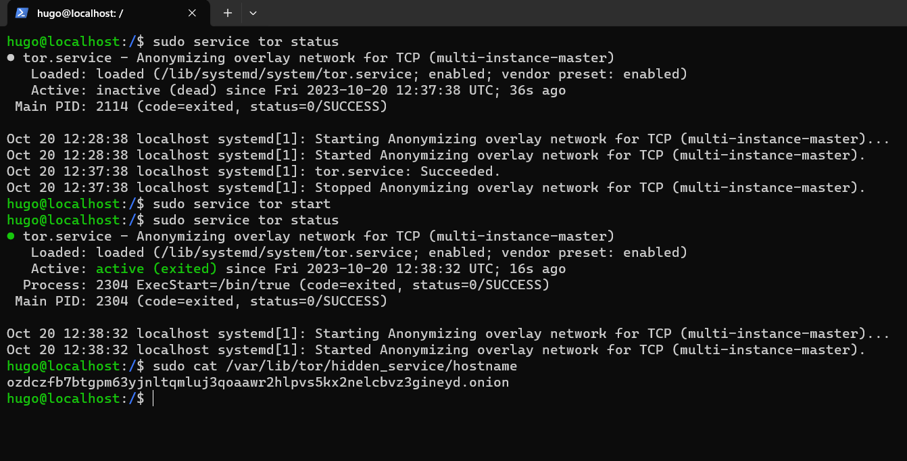
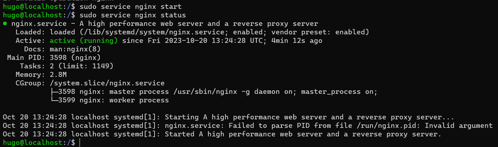
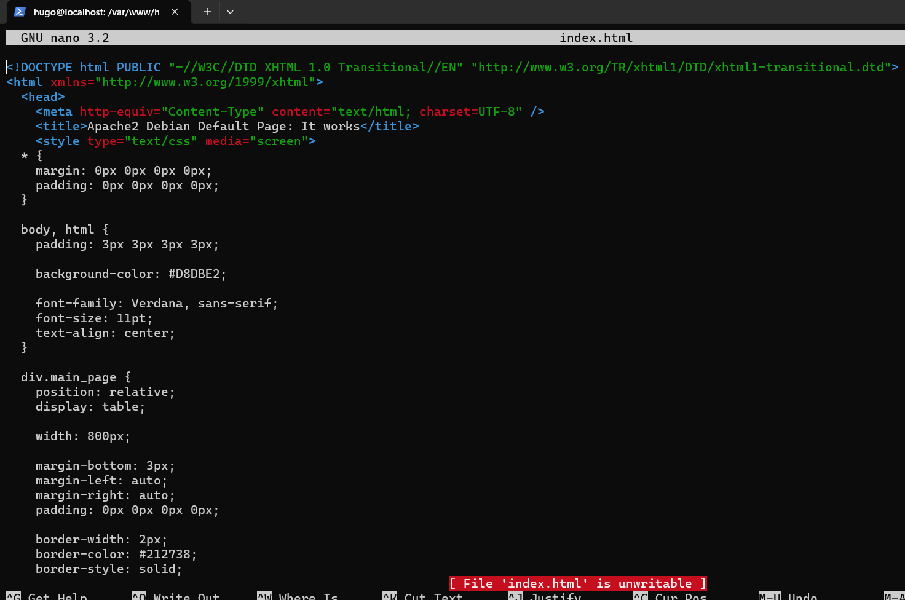

Projektkontext
Im Oktober 2023 stellte ich eine kleine persönliche Website als Tor Hidden Service im Dark Web bereit. Ziel war nicht die Veröffentlichung sensibler Inhalte, sondern das praktische Verständnis der Infrastruktur: Wie wird ein .onion-Dienst exponiert, wie wird er mit einem klassischen Nginx-Server verbunden und welche Auswirkungen hat dies auf Anonymität?
Die Konfiguration erfolgte vollständig manuell über die Kommandozeile. Die Screenshots wurden anschließend offline für eine technische und verantwortungsvolle Archivierung gespeichert; aktive Links oder Weiterleitungen gibt es nicht.
1. Tor-Dienst & .onion-Adresse
Ich konfigurierte und startete Tor, prüfte den Dienststatus und las den generierten Onion-Hostname aus dem Hidden-Service-Verzeichnis aus.

2. Nginx hinter Tor
Nginx diente als lokaler HTTP-Server. Tor leitete den Datenverkehr des Hidden Service auf den lokalen Nginx-Port weiter. Dadurch wurden Webserver und Anonymisierungsschicht klar voneinander getrennt.

3. Minimale statische Website
Die Website selbst war bewusst minimal: eine statische HTML-Seite, direkt auf dem Host editiert, ohne Framework oder Site-Generator. So lag der Fokus auf Infrastruktur, Dienstexposition, Logging und Angriffsfläche.

4. Lernerfahrungen
Das Projekt vermittelte mir ein konkretes Verständnis von Tor Hidden Services, der Netzwerkkette Tor ↔ Nginx ↔ statische Website und den serverseitigen Anonymitätsaspekten. Es war ein rein lehrorientiertes Projekt ohne illegale Inhalte.